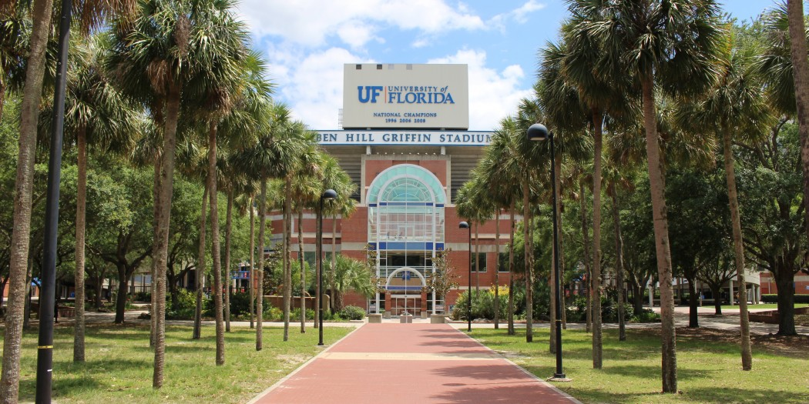

2025 - 2028
CURRENTLY ENROLLED
University of Florida
Gainesville, Florida
Bachelor of Science in Psychology
Behavioral & Cognitive Neuroscience · Minor in Linguistics
Studying the science of human behavior and cognition while exploring how language shapes communication and experience. My academic interests connect research, people, and organizational psychology.
Focus Psychology & Neuroscience
Minor Linguistics